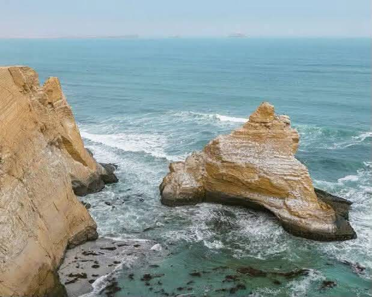
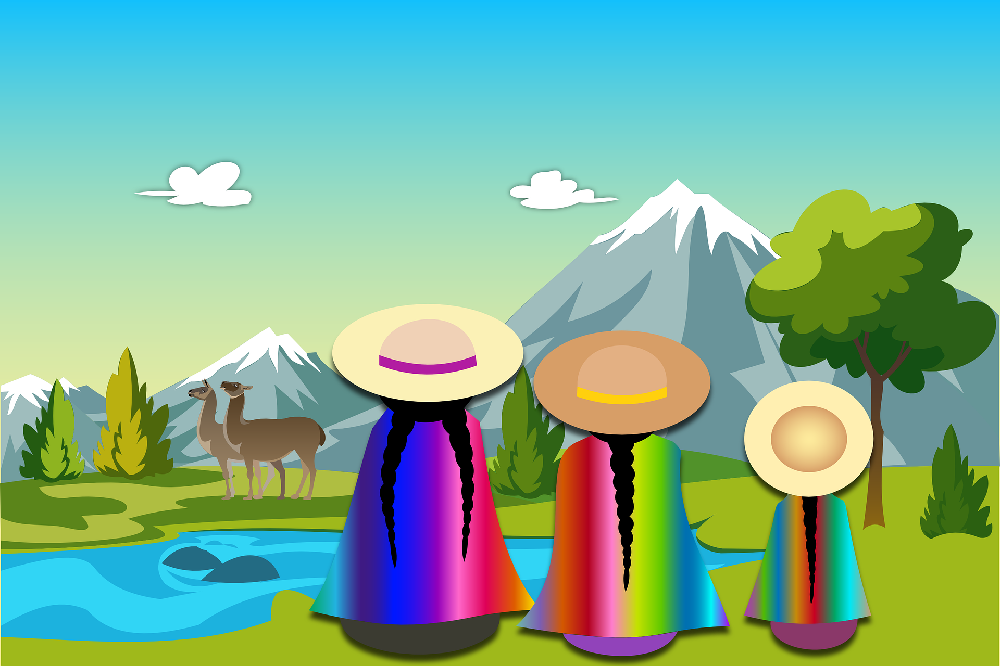
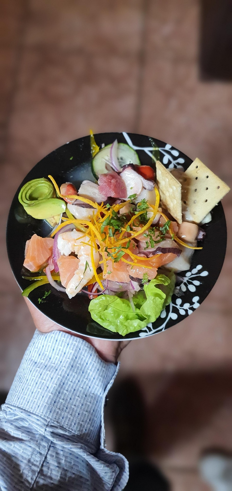

Rutas Turísticas
Itinerarios sugeridos para conocer los principales destinos del Perú.

Explora nuestras rutas y descubre nuevos lugares donde podras encontrar restaurantes y sugerencias de los creadores de este contenido.

Itinerarios sugeridos para conocer los principales destinos del Perú.

Sugerencias de restaurantes para probar la gastronomía local en tu viaje.